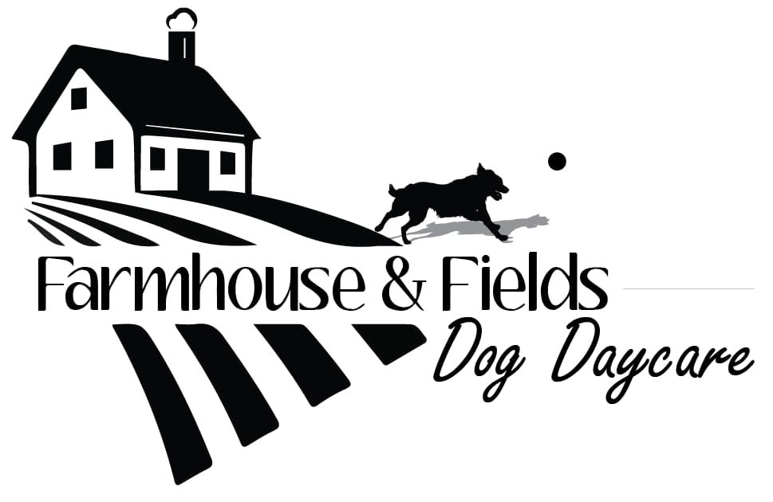

1
Low, consistent numbers
Farmhouse & Fields keeps the group small and familiar. Melissa gets to know each dog incredibly well: who they play with, how they settle in, what they love, and when they need a little space.
Brand direction
The colours, type, photography, voice, and website direction we are building from.
September 2026 · The Yellow Front Door

The brand
The Farmhouse already has a very clear feel to it. The website does not need to invent one. It needs to show what Melissa has built: a small, consistent group of dogs, a place that feels comfortable and familiar, lots of room to play, and someone who knows and loves the dogs like her own.
Farmhouse & Fields keeps the group small and familiar. Melissa gets to know each dog incredibly well: who they play with, how they settle in, what they love, and when they need a little space.
The house, yard, barn, and fields are part of the experience. It is a home away from home for these pups and a big part of what makes the daycare feel like its own place.
That comes through all over her Facebook page. She knows their friendships, routines, quirks, and personalities, and she clearly loves having them there. That connection should be easy to feel on the website too.
People should feel welcome here, but they should also be able to find what they need without digging: how daycare works, pricing, the wait-list, policies, and what happens next.
Colour
The sites Melissa liked were light and simple. White gives us that clarity. Heritage Wine and Deep River give the brand its own presence, while the neutrals and real photography keep everything feeling easy and lived-in.
#6E1413
Our main accent. Rich and warm, used for buttons, important links, and the details we want people to notice first.
#385D6B
Our secondary accent. A deep, softened blue that gives us contrast without competing with the red.
#E7DDCD
A warm neutral for the occasional section, card, or background when white needs a little break.
#FCFBF8
The main backdrop. Clean and light, but a little softer beside the photos than a bright blue-white.
#2A2926
Our main text colour. Softer than true black, but still strong and easy to read.
White does most of the work. Heritage Wine is where we want the eye to go. Deep River and oat give us a little flexibility when a page needs contrast or warmth. The photos will bring plenty of colour on their own.
Typography
The logo already has its own script, so the rest of the typography should support it rather than compete with it. Aubrey brings a little character to the larger moments; DM Sans keeps the practical pieces clear.
Use Aubrey for page titles, section headings, and shorter lines where we want a little more personality. It does not need to carry long paragraphs.
DM Sans handles body copy, navigation, buttons, forms, pricing, FAQs, captions, and anything people need to scan quickly.
Photography
Melissa is genuinely good at capturing the dogs as they are. The photos already show the friendships, seasons, funny moments, the property, and each dog’s personality. We should use that rather than trying to manufacture a different look.
Use the photography throughout the site, give it a gallery of its own, and keep Facebook connected for the day-to-day stories Melissa already tells so well.
View Farmhouse & Fields on Facebook →Not just in a gallery. Work them into the Home page, The Farmhouse, Daycare, and anywhere they help show what the place is actually like.
Use the muddy ones, goofy ones, beautiful ones, group shots, quiet moments, and dogs with their favourite friends. They do not all need to look polished.
Crop when the layout needs it and make small corrections only when necessary. Otherwise, leave the photos alone.
There is already more than enough real material here. The site should look like Farmhouse & Fields, not a generic dog daycare.
Voice
Her Facebook page already gets this right. It tells little stories, names the dogs, notices their personalities, and makes the connection she has with them obvious without having to announce it.
The writing should carry the same feeling as her Facebook: down to earth, engaging, occasionally funny, and rooted in the dogs, the people, and the place. We are not trying to turn Melissa into a polished pet-care brand. We are giving the voice she already has a clear home on the website.
Who found a friend, who lives for the pool, who came in ready to wrestle, who wanted nothing to do with the costume. Those details are what make the writing feel like this place.
Melissa knows and loves these dogs like her own. We do not need to say that over and over. The stories, names, and details will make it obvious.
Warm and confident, but never lofty. Skip words like “premium,” “curated,” and “exceptional” when plain language says it better.
Pricing, hours, policies, wait-list information, and next steps should simply tell people what they need to know.
Words to keep in our pocket
Melissa liked all of these, so we do not need to force one into the job of “official tagline.” They can show up in different places as we build the site and give the brand a few recognizable phrases to come back to.
Website direction
The site should feel light, warm, and easy to move through. Each page has a clear job, while the photography and writing give us plenty of room for personality.
We do not need to reinvent what already works. The dogs, the Farmhouse, the property, the friendships, the humour, and Melissa’s connection with the dogs are already the personality of the business. The website just gives all of that a clear, welcoming place to live.
A first look at the Farmhouse, the daycare, and what makes it special, with great photos and clear ways to explore the rest of the site.
Melissa’s story, the house, yard, barn, and fields, and a little more about how Farmhouse & Fields came to be.
How daycare works, hours, pricing, group size, routines, requirements, and what families should know before their dog starts.
A home for Melissa’s photography: everyday play, friendships, quiet moments, muddy days, changing seasons, and life around the Farmhouse.
Straightforward answers to the things families are most likely to wonder about before getting in touch.
A clear explanation of the process, what happens next, and a simple way for families to tell Melissa about their dog.
An easy route to Time To Pet and any other information existing families need regularly.
A simple way to reach Melissa. This can stay as its own page or be worked into the footer and FAQ page as we build.
Keeping it consistent
Nothing here needs to be complicated. These are the choices that give us a solid starting point for the website and anything Melissa makes later.
Warm white first, with Heritage Wine as the strongest accent. Let the photos carry a lot of the colour.
Farmhouse, yard, barn, fields, seasons, and dogs. We do not need extra “farmhouse” decoration.
Aubrey for headings and feature lines. DM Sans for the things people need to read quickly.
Build from Melissa’s gallery and the stories she is already telling.
Specific stories, normal language, and no lofty pet-care copy.
Pricing, hours, daycare details, wait-list information, policies, and next steps should always be easy to find.
Brand snapshot
A quick little preview of how the logo, colours, type, and working phrases can start to sit together.
White space keeps things clear. Heritage Wine gives us the strongest brand moment, Deep River brings in a quieter contrast, and Melissa’s photos do the rest.